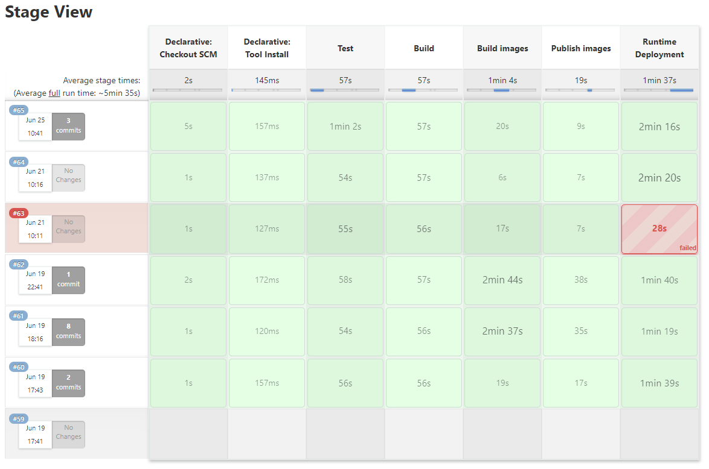

Funcionalidades
- Visualização em tempo real das medidas realizadas por sensores, nos espaços;
- Visualização de um histórico dessas medidas nos espaços, permitindo a visualização da evolução temporal das mesmas;
- Definição de limites mínimos e máximos para os valores de temperatura e humidade;
- Aparecimento de alarmes quando os sensores detetam valores fora dos limites aceitáveis;
- Após surgirem alarmes, os valores que ultrapassaram os limites aceitáveis são automaticamente ajustados para valores
dentro do aceitável (através de rega, aumento/diminuição da temperatura através do ar condicionado ou controlo de CO2).
Personas
Idade: 56 anos
Género: Masculino
Localização: São Pedro do Sul, Portugal
Família: Casado, pai de três filhos
Educação: Ensino secundário
Tecnologia: Internet, redes sociais
Bio: O António é pai de três filhos. Atualmente, vive sozinho com a sua mulher, na sua quinta em São
Pedro do Sul,
distrito de Viseu. O António é conhecido pelos seus produtos biológicos, que saem diretamente da sua quinta para uma
pequena loja, situada no centro de Viseu.
Objetivos: O António quer inovar a sua variedade de produtos, pelo que procura produzir rebentos, em
grande escala - é
uma produção barata mas que traz um grande lucro.
Frustrações: Com o aumento do mercado de produtos biológicos, o António sente que não consegue
acompanhar esse
crescimento. Cada vez há mais variedade de produtos biológicos e grandes produções a fazerem concorrência, pelo que
sente a necessidade de evoluir.
Como a Bloom pode ajudar: Com a Bloom, o António poderá entender como tratar das suas estufas e
aprender quais as
necessidades dos seus rebentos. Assim, vai conseguir, de forma bastante fácil, produzi-los em grande escala e
vendê-los
na sua loja, dando desta forma um enorme passo para acompanhar o crescimento do mercado de produtos biológicos.
Cenários
Ver as condições de humidade, em tempo real
Funcionalidade: como utilizador quero ver, em tempo real, quais as condições de humidade da minha
estufa.
Cenário: Ver as condições de humidade em tempo real
Dado que estou na home
page
Então vou poder observar quais as condições de humidade atuais, na minha estufa
Ver as condições de temperatura, em tempo real
Funcionalidade: como utilizador quero ver, em tempo real, quais as condições de temperatura da minha
estufa.
Cenário:Ver as condições de temperatura em tempo real
Dado que estou na home
page
Então vou poder observar quais as condições de temperatura atuais, na minha estufa
Receber um aviso, quando as condições de humidade não estão aceitáveis
Funcionalidade: como utilizador, vou receber um aviso quando as condições de humidade da minha
estufa não são aceitáveis, de acordo com
os devidos parâmetros.
Cenário:Receber um aviso, quando as condições de humidade não estão aceitáveis
Dado que
tenho a página web aberta no meu computador
Quando os parâmetros de humidade deixam de estar dentro dos
valores aceitáveis
Então vou receber um alerta com essa informação
Receber um aviso, quando as condições de temperatura não estão aceitáveis
Funcionalidade: como utilizador, vou receber um aviso quando as condições de temperatura da minha
estufa não são aceitáveis, de acordo com
os devidos parâmetros.
Cenário:Receber um aviso, quando as condições de temperatura não estão aceitáveis
Dado que
tenho a página web aberta no meu computador
Quando os parâmetros de temperatura deixam de estar dentro dos
valores aceitáveis
Então vou receber um alerta com essa informação
Definir os limites aceitáveis de temperatura
Funcionalidade: como utilizador quero definir os limites aceitáveis de temperatura para a minha
estufa.
Cenário: Definir os limites aceitáveis de temperatura
Dado que estou na home page
Quando seleciono, na navbar, a tab “Configurações”
E seleciono a tab “temperatura”
E preencho o campo “Limite mínimo de temperatura”
E preencho o campo “Limite máximo de temperatura”
E seleciono “Confirmar”
Então os novos limites aceitáveis de temperatura ficam definidos.
Definir os limites aceitáveis de humidade
Funcionalidade: como utilizador quero definir os limites aceitáveis de humidade para a minha
estufa.
Cenário: Definir os limites aceitáveis de humidade
Dado que estou na home page
Quando seleciono, na navbar, a tab “Configurações”
E seleciono a tab humidade
E preencho o campo “Limite mínimo de humidade
E preencho o campo “Limite máximo de humidade
E seleciono “Confirmar”
Então os novos limites aceitáveis de humidade ficam definidos.
Aplicação externa
Aplicação externa em Java / Spring Boot (sensorsGenerator), responsável por criar e simular o comportamento de sensores
virtuais. Esta aplicação produz, constantemente, novos dados para cada sensor e responde, de forma apropriada e real, a
eventuais ações. Por exemplo, inicialmente são produzidos valores de humidade que vão sendo incrementados ao longo do
tempo, sendo que se ocorrer a ação de iniciar uma rega, os mesmos valores irão começar a aumentar. No caso da
temperatura, esta começa por ter variações mais ou menos aleatórias e se o ar condicionado for ligado, os valores
começam a descer. Por sua vez, os valores de CO2 também apresentam um comportamento mais ou menos variante mas não
dependem de ações.
Existem, no total, 7 sensores, sendo eles:
- 2 pares de sensores gerais (Temperatura e CO2), dispostos nos dois lados (Este e Oeste) da estufa;
- 3 sensores de Humidade, um por tabuleiro, visto que plantas de um mesmo tabuleiro são todas iguais e partilham o mesmo
solo.
Cluster Kafka
Existem 5 tópicos:
esp50-sensors-temperature
- Produtor: aplicação externa que gera novos dados dos sensores (sensorsGenerator)
- Consumidor: aplicação responsável pela leitura e armazenamento dos novos dados (sensorsApp)
esp50-sensors-humidity
- Produtor: aplicação externa que gera novos dados dos sensores (sensorsGenerator)
- Consumidor: aplicação responsável pela leitura e armazenamento dos novos dados (sensorsApp)
esp50-sensors-co2
- Produtor: aplicação externa que gera novos dados dos sensores (sensorsGenerator)
- Consumidor: aplicação responsável pela leitura e armazenamento dos novos dados (sensorsApp)
esp50-sensors-actions
- Produtor: aplicação responsável por publicar ações conforme as leituras (detectorApp)
- Consumidor: aplicação externa que gera novos dados dos sensores e que, perante determinada ação (rega, ligar o ar
condicionado,
etc.) vai fazer subir ou baixar os valores (sensorsGenerator)
esp50-alarms
- Produtor: aplicação responsável por publicar ações conforme as leituras e também alarmes (detectorApp)
- Consumidor: aplicação que recebe o alarme do tópico e envia para a componente de apresentação (manageApp)
Microsserviços
Correspondem a 3 diferentes aplicações, em Java / SpringBoot:
- Aplicação sensorsApp, responsável por ler valores dos sensores e os armazenar na base de dados, sendo a única aplicação
a comunicar diretamente com a mesma. É uma aplicação com serviço REST, que expõe endpoints acedidos pelas outras duas
aplicações.
- Aplicação detectorApp que funciona como um scheduler que vai chamar regularmente endpoints da sensorsApp para obter
limites de excedidos ou não. Determina que ações tomar e publica-as no tópico esp50-sensors-actions e também desencadeia
respetivos alarmes, que publica no tópico esp50-alarms. É adicionalmente responsável por receber novos limites para os
sensores, através do seu serviço REST.
- Aplicação manageApp que é uma aplicação com serviço REST responsável por comunicar com a componente de
apresentação/frontend. Recebe pedidos e eventuais ações dos utilizadores e comunica com as restantes duas aplicações, de
modo a proporcionar os serviços necessários. Para além dos pedidos HTTP, tem também implementado um mecanismo de
WebSockets, utilizado para enviar alarmes para o frontend.
Base de Dados
Implementada com InfluxDB (versão 1.8) e funciona como repositório de armazenamento do histórico de leituras dos
sensores.
Modelo de Dados - Leituras de sensores
As informações de uma leitura de um sensor consistem nos seguintes parâmetros:
- sensorId : Integer
- dataType: String {Double}
- sensorType: String {Temperature, Humidity, CO2}
- unit: String {Celsius, Percentage, Parts per million}
- unitAbreviation: String {C, %, ppm}
- value: Double
- timestamp: Long
Exemplo
{
"sensorId": 0,
"dataType": "Double",
"sensorType": "Temperature",
"unit": "Celsius",
"unitAbreviation": "C",
"value": 22.0,
"timestamp": 12345678,
}
Frontend
Desenvolvido em ReactJS e corresponde à componente responsável por apresentar os dados e receber interações dos
utilizadores. Comunica exclusivamente com a aplicação do backend manageApp, enviando-lhe pedidos HTTP e recebendo
respostas, e também através de WebSockets, para a receção de alarmes.
Deployment
Todos os serviços e módulos do sistema foram deloyed em duas máquinas virtuais (VMs) criadas para o efeito: uma para
hospedar recursos gerais, como bases de dados, Kafka, etc, e outra para os nossos módulos, específicos do nosso sistema.
Cada módulo descrito (microsserviços, Kafka, base de dados, etc.) anteriormente foi “empacotado” em containers Docker.
Estes containers foram publicados num Docker Registry, a partir do qual foram instalados na VM para poderem ser
executados. Cada container corre a respetiva aplicação numa porta específica, de forma a possibilitar a comunicação
entre os serviços. Além da porta, e como as aplicações foram deployed numa VM, é importante que cada aplicação que
precise de comunicar com outro módulo (base de dados, Kafka, outra aplicação, etc.) conheça o IP onde esse módulo está a
correr, ou seja, o IP da VM onde foi instalado.
De seguida, apresentam-se as portas que se encontram associadas a algumas das ferramentas anteriormente enumeradas, bem
como as portas associadas às aplicações/microsserviços:
| Microsserviço / Componente |
Porta |
| sensorsGenerator |
50090 |
| sensorsApp |
50080 |
| detectorApp |
50050 |
| manageApp |
50060 |
| InfluxDB |
8086 |
| Kafka |
9092 |
| Frontend (webapp) |
50030 |
| Elastic Search |
9200 |
| Kibana |
5601 |
Executar localmente
Embora as aplicações estejam instaladas numa VM, o seu desenvolvimento ocorreu nas máquinas pessoas dos elementos da
equipa, de forma colaborativa (como detalhado na secção “Workflow”, abaixo) e, portanto, há diferenças em certas
configurações. De seguida, seguem-se os passos que devem ser tomados para correr o sistema localmente:
- Executar uma instância do Influx DB localmente. A forma mais fácil é instalar a imagem Docker do InfluxDB e executá-la
na porta 8086. De notar que a versão do InfluxDB usada é a 1.8, pelo que a imagem Docker a instalar deverá ser a
correspondente a essa versão. Isto pode ser feito com o comando:
docker pull influxdb:1.8
- Instalar e executar o cluster Kafka (ver mais aqui). Para isso é necessário:
- Inicializar o Zookeeper
- Inicializar o servidor Kafka
- Criar os tópicos mencionados anteriormente, com os nomes exatamente iguais
- Em cada aplicação, comentar as linhas que referem pares IP-porta com o IP da VM e descomentar as linhas equivalentes,
mas que, em vez do IP, têm “localhost”. Essas linhas encontram-se:
- Em cada microsserviço Spring Boot:
- No ficheiro
application.properties no diretório src/main/resources
- No ficheiro
Utils.java no diretório src/main/java/ua/p50/<nome_aplicação>/utils
- Na aplicação web (frontend), no ficheiro
urls.js no diretório src/variables
Nota: ao abrir a webapp (frontend) é mostrado um formulário de autenticação. Este formulário é apenas demonstrativo do
fluxo idealizado de interação com o utilizador uma vez que não foi implementada autenticação. Assim, quaisquer
credenciais fornecidas irão levar o utilizador a aceder à plataforma, já que o formulário é estático até ao momento.
Workflow
Antes de começar o desenvolvimento, a equipa concordou em adotar um workflow, de forma a que todos os membros estivessem
sincronizados e pudessem ter uma visão concreta do estado de desenvolvimento, bem como garantir uma comunicação fluída.
Como principal ferramenta de comunicação, a equipa adotou o Slack, devido a uma organização de mensagens por tópicos.
Ainda na comunicação, contámos com uma pasta na Google Drive, para armazenar todos os documentos necessários, como
brainstorming, resultados de reuniões, diagramas e outros; e ainda o Trello, de forma a atribuir tarefas aos elementos
da equipa e ter visibilidade sobre o que está feito, o que ainda falta fazer e o que está em desenvolvimento e por que
elementos da equipa.
No que toca ao desenvolvimento propriamente dito, a equipa adotou como repositório o GitHub, onde está o código fonte do
sistema, seguindo um desenvolvimento baseado no GitFlow Workflow: uso de branches sempre que necessário
(funcionalidades, correções, testes, etc.) e pull requests para fomentar a revisão do código por outros elementos da
equipa.
CI/CD
A equipa adotou ainda um fluxo de Continuous Integration e Continuous Delivery, de forma a garantir que todos os módulos
eram integrados e testados com sucesso e detetar eventuais erros no processo, de forma a corrigi-los o mais rapidamente
possível. Para isso, a equipa recorreu ao Jenkins, integrado com nosso repositório GitHub, criando um Jenkinsfile na
raiz do repositório com os passos necessários para a compilação, testes e deployment, que vão ser executados numa
pipeline Jenkins. Esta pipeline é detalhada mais a fundo na secção “Operações”.
Endpoints
/sensor/{id}/readings/latest
Permite obter a leitura de um dado sensor, identificado pelo seu ID, mais recente.
/sensor/{id}/readings/all/{count}
Permite obter um determinado número de últimas leituras, ordenadas, de um dado sensor, identificado pelo seu ID. Se o
número passado ultrapassar o número real de dados existentes na base de dados, são devolvidos apenas aqueles que
definitivamente existem.
Obter as leituras mais recentes de todos os sensores
/sensor/all/latest-readings
Permite obter a leitura mais recente de todos os sensores que existem.
/sensor/{type}/latest-readings
Permite obter a leitura mais recente de todos os sensores de um dado tipo.
/sensor/{id}
Permite obter a informação ou características do sensor com esse ID.
/sensor-limits/temperature/new?min=30&max=40
Permite definir novos limites para os sensores de temperatura.
/sensor-limits/humidity/new?min=30&max=40
Permite definir os novos limites para os sensores de humidade.
/sensor-limits/temperature
Permite obter os limites atuais dos sensores de temperatura.
/sensor-limits/humidity
Permite obter os limites atuais dos sensores de humidade.
Monitorização
De forma a monitorizar o estado do sistema, recorremos, em primeiro lugar, aos outputs da pipeline do Jenkins. Além de
indicar os erros que aconteceram, o Jenkins fornece ainda uma visão geral sobre as etapas, o tempo de execução de uma e
se foi bem sucedida ou não.

Além disso, contamos ainda com o Portainer, para visualizar as imagens presentes na VM e verificar o estado de cada e os
seus logs.
Uma outra ferramenta de monitorização proposta foi o ELK, mas não tirámos proveito da ferramenta por questões que
detalhamos na secção “Considerações Finais”.
Testes
Foram realizados vários testes de integração e funcionais de modo a verificar a funcionalidade do sistema desenvolvido,
tendo em conta os diferentes cenários.
- Testes ao serviço que acede à base de dados: Foram efetuados testes, com recurso a JUnit e Mockito, à classe responsável pelos serviços da aplicação, que acedem à base de dados e retornam os resultados pedidos. De modo a isolar dependências externas e testar a funcionalidade dos serviços foi feito Mock do InfluxDB. Foram testados os cenários para verificar se quando existem dados na base de dados estes são retornados e possuem os timestamps corretos e se os métodos responsáveis por retornar os resultados mais recentes também apresentam o comportamento correto.
- Testes aos serviços que interagem com o Kafka: Os testes referentes à recepção de mensagens de tópicos Kafka pelo serviço consumidor da aplicação foram efetuados recorrendo ao JUnit e EmbeddedKafka. Foram escritos com recurso à ferramenta Cucumber e têm como principal objetivo verificar se as mensagens são corretamente consumidas e se, consequentemente, são também invocados os serviços corretos, nomeadamente o serviço responsável por introduzir os novos dados lidos na base de dados da aplicação. É adicionalmente verificado se os mesmos são definitivamente lá armazenados. Os três cenários definidos correspondem aos três tópicos, dos respetivos três sensores Temperatura, Humidade e Co2.
- Testes funcionais: para realização destes testes, foi usado Cucumber (através da ferramenta cucumber js), juntamente com Selenium (usando o chromedriver). Realizaram-se testes funcionais para os seguintes cenários:
- Login na Bloom
- Leituras de temperatura na dashboard
- Leituras de CO2 na dashboard
- Leituras de humidade na dashboard
- Definição com sucesso de limites de temperatura e humidade
- Definição de uma temperatura acima do limite permitido (gera um alerta de erro)
Como mencionado anteriormente, os testes automáticos serão executados na pipeline, de forma a garantir que o sistema
está correto e pronto para ser devidamente deployed.
Dificuldades
Relativamente ao ELK, não fomos capazes de o colocar a funcionar na íntegra, tendo sido esta a nossa falha principal.
Apesar de termos todos os ficheiros e definições necessárias, bem como logs criados, estes não aparecem no Kibana. Isto
poderá ser devido a algum problema da VM alheio a nós. De qualquer forma, não conseguimos avançar mais em tempo útil.
Trabalho futuro
- Resolver as dificuldades
- Como trabalho futuro, pretendemos ter o ELK completamente funcional. Caso tal não seja possível, iremos optar por outra
ferramenta de logging.
- Histórico de alarmes e ações desencadeadas no sistema
- Implementação de autenticação (frontend e backend)